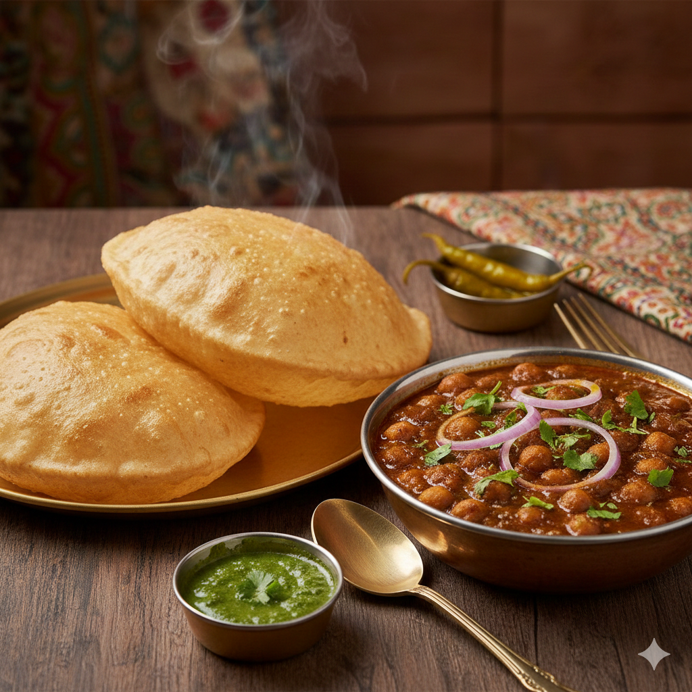

Chole Bhature

Description
Chole Bhature is a legendary North Indian classic featuring a robust, spicy chickpea curry paired with deep-fried leavened bread. The chole are slow-cooked in a fragrant blend of cumin, coriander, and dried pomegranate seeds to achieve a dark, savory richness. This hearty dish is traditionally garnished with fresh ginger juliennes, green chilies, and a squeeze of tangy lemon.
The bhature are golden-brown balloons of dough, prized for their crispy exterior and soft, airy interior that perfectly absorbs the gravy. Often served with a side of spicy mixed pickles, crunchy onions, and cooling mint chutney, it offers a symphony of textures. It remains the ultimate soul food for indulgent breakfasts, bustling street-side lunches, and festive family gatherings across India.
Ingredients
For the Chole
- Dried white chickpeas (Kabuli Chana)
- Onions, tomatoes, and green chilies
- Ginger-garlic paste
- Whole spices (Cinnamon, cardamom, cloves, bay leaf, tea bag for color)
- Ground spices (Turmeric, red chili powder, coriander powder, garam masala)
- Dry mango powder (Amchur) or pomegranate seed powder (Anardana)
- Cooking oil or ghee
- Fresh coriander leaves and salt
For the Bhature
- All-purpose flour (Maida)
- Semolina (Sooji)
- Baking powder and baking soda
- Plain yogurt (Curd)
- Sugar and salt
- Water (for kneading)
- Oil (for shortening and deep frying)
Steps
For the Chole
- Soak and Pressure Cook: Soak chickpeas overnight. Pressure cook them with water, salt, a tea bag (for color), and whole spices until soft.
- Resting Period: Coat the dough with a little oil, cover with a damp cloth, and let it rest in a warm place for at least 2 hours to ferment.
- Shape: Divide the dough into equal balls. Grease your rolling pin and roll each ball into an oval or round shape (avoid using extra flour).
- Deep Fry: Heat oil until very hot. Gently slide the bhatura in and press lightly with a slotted spoon until it puffs up. Flip and fry until golden on both sides.